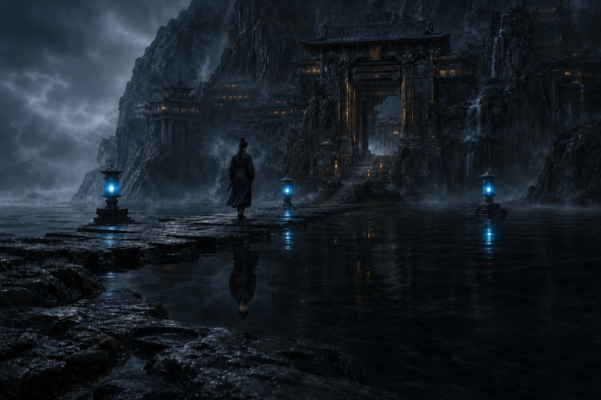

黑水照影，幽灯唤魂。敌人仍然站立时，支撑其形神的力量已经被一层层取走。
幽都门人通晓三魂七魄。其术起势较慢，却擅长让强敌在不知不觉间失去攻防、速度、治疗与行动能力。山门两岸常年不见日月，三盏魂灯为每一个归山者留下方向。

战斗定位
- 核心资源：魂火，上限 3 点。
- 默认术式：《一叹》。
- 核心减益：蚀魂，最高 5 层。
- 核心伤害：魂伤，按真实伤害结算。
- 道途一：招魂渡夜，忘川持续伤害、禁疗、长线铺层。
- 道途二：镇魄司命，照影增伤、失魂、镇魂与高层裁决。
拥有 3 点魂火时，符合条件的下一次魂伤会获得额外增幅，随后消耗全部魂火。因此幽都既要把蚀魂稳定推到高层，也要决定魂火应交给铺层术、控制术，还是终结神通。
蚀魂机制
蚀魂持续 3 回合，最高 5 层。它会随层数削弱目标的物攻、法攻、物防、法防、身法与受治疗能力：
- 1 层：攻防与身法降低 3%。
- 2 层：攻防与身法降低 5%，受治疗降低 15%。
- 3 层：攻防与身法降低 8%，受治疗降低 30%。
- 4 层：攻防与身法降低 12%，受治疗降低 50%。
- 5 层：攻防与身法降低 12%，无法获得气血治疗。
普通驱散每次只能移除 1 层蚀魂。蚀魂达到特定层数还会触发更强的技能条件：例如《离魂引》在三层以上造成更多魂伤，《镇魂》在四层以上施加更强控制，《魂兮不归》则要求目标至少拥有四层蚀魂。
六卷心法与神通
| 心法 | 长期成长 | 代表神通 |
|---|---|---|
| 《幽都魂典》 | 宗门总纲 | 《一叹》《魂兮不归》 |
| 《三魂离合篇》 | 法术攻击 | 《离魂引》《照影》 |
| 《忘川渡夜录》 | 最大法力 | 《忘川潮》 |
| 《七魄夺形法》 | 控制命中 | 《夺魄》 |
| 《镇魂铁册》 | 法术防御 | 《镇魂》 |
| 《心死神活诀》 | 控制抗性 | 常驻“心死神活” |
主要神通分工如下：
- 《一叹》：基础铺层，命中后增加 1 层蚀魂。
- 《离魂引》：直接魂伤并增加 2 层蚀魂；目标已有至少 3 层时伤害提高。
- 《照影》：让目标受到的所有伤害随蚀魂层数提高。
- 《忘川潮》：施加忘川，使目标每次行动前受到魂伤并降低治疗。
- 《夺魄》：混合术伤与魂伤，增加蚀魂并削弱敌方攻击。
- 《镇魂》：四层窗口下以镇魂钉封住主动技能，并阻断气血治疗。
- 《魂兮不归》：按蚀魂层数计算终结魂伤，基础形态结算后清除蚀魂。
- “心死神活”：常驻控制韧性，并在每场第一次受控后自行解脱。
道途一：招魂渡夜
招魂渡夜让忘川一寸寸漫过归路，强调长夜回潮、压缩治疗与终结后的续接。
- 《忘川潮》对至少 3 层蚀魂的目标提高持续魂伤。
- 每回合首次有效潮伤可以获得魂火。
- 参悟可延长忘川、强化高层持续伤害、进一步降低治疗或速度。
- 高阶节点可以让终结后保留蚀魂，或再次续上忘川，缩短下一轮铺垫。
回潮 维持三层压力并适时终结，沉医 专门压缩治疗窗口，长夜 则延后收束，让四层蚀魂与忘川持续施压。
道途二：镇魄司命
镇魄司命以“见影知魂、知魂书名”为核心，把蚀魂层数转化为更直接的魂伤与控制优势。
- 对至少 3 层蚀魂目标，自身直接魂伤提高。
- 《照影》会让自身魂伤进一步随层数增长。
- 每场第一次受控后解脱时可获得魂火。
- 高层《镇魂》可获得更强命中、速度压制与法力效率。
- 参悟可强化《魂兮不归》的基础伤害、逐层成长和裁决后的资源回转。
钉法者 优先压制敌方术者，四层判决 会在达到四层后立即终结，取其第五 则倾向先触发失魂，再利用归窍窗口储存魂火。
山门舆图

幽都殿中没有神像，只有映照姓名、来处与归路的一面黑水。三魂阁收藏六卷心法，七魄台用于参悟道途，照影场检验神通在影上的痕迹。药庐只治魂魄缝隙，不许强拘生魂；招魂司记录失名者与界隙回声，也护送愿意归去的魂。
选择建议
面对回复能力强、战线较长的敌人，招魂渡夜更容易持续制造压力；面对依赖主动技能或关键行动窗口的敌人，镇魄司命能以照影、失魂与镇魂打断节奏。
幽都最怕铺垫被迫中断。配装时应确保至少有稳定铺层手段，并根据敌方治疗与控制抗性，决定四槽中是否同时携带《忘川潮》《照影》或《镇魂》。